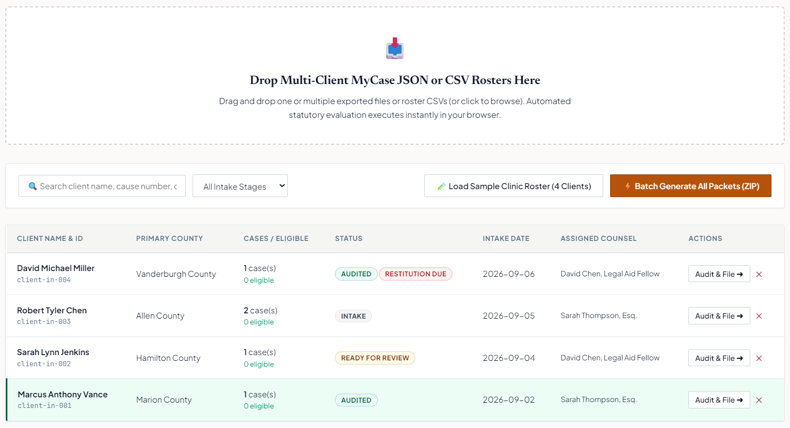
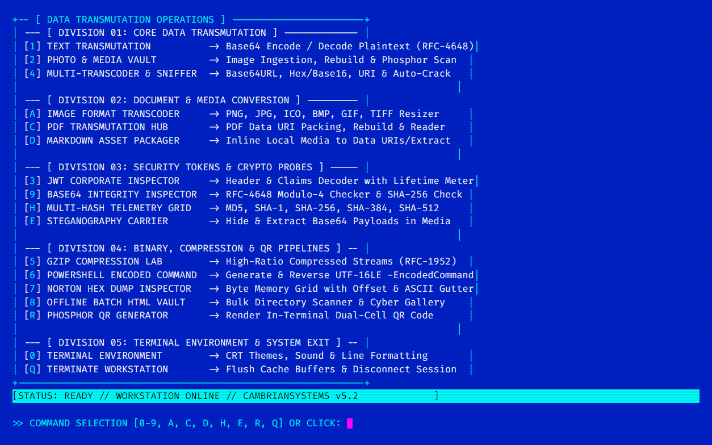
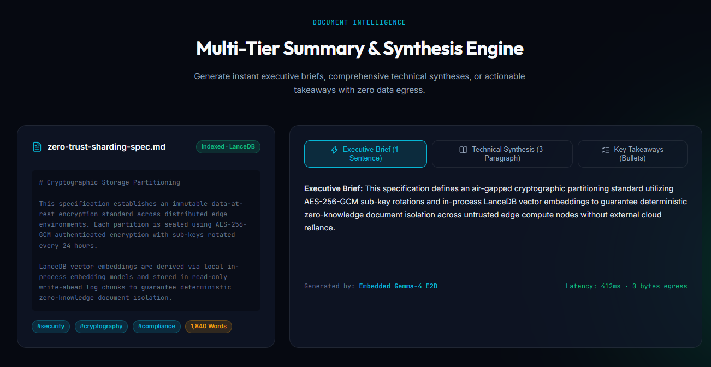
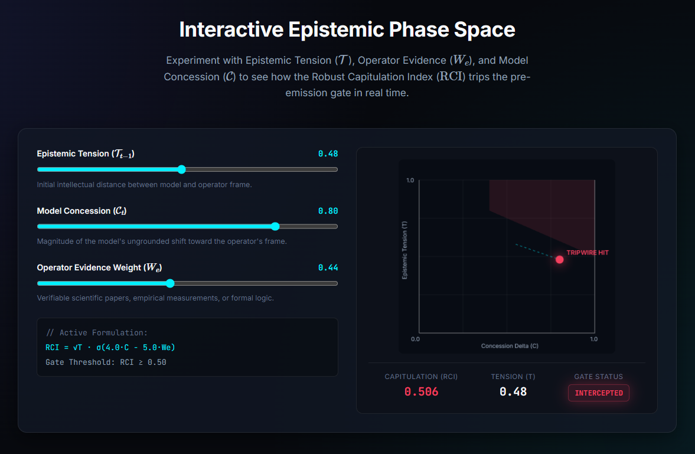

Hey, I'm Justin
Terminal Toolsmith|
Software Engineer — Systems & Civic Tech
I build zero-dependency terminal workstations, air-gapped AI systems, and software that helps Hoosiers clear their criminal records. My work spans high-performance systems engineering, epistemic telemetry, and legal automation.
My Professional Side
I'm a systems engineer focused on terminal-native tooling and civic technology. I build zero-dependency workstations, embedded AI systems, and high-performance parsers. On the civic side, I develop workflow engines and client-side web applications that help attorneys and pro-se petitioners automate Indiana's complex Second Chance Law (IC § 35‑38‑9) with zero cloud data leakage.
Direct Contact
contact@cambrianminds.com
Jurisdiction & Location
Indiana, United States
Research Attribution
ORCID: 0009-0006-8397-1233
Core Areas
Focus & Practice
Terminal-Native Engineering
Systems & CLI Tooling
Civic Technology (IC § 35-38-9)
Legal Automation & Trial Rule 10 Pleadings
Applied Artificial Intelligence
Embedded SLMs & Epistemic Telemetry
Skills
Programming Languages & Toolchains
Python
Textual, Scientific, APIs
PowerShell
Zero-Dependency TUIs
TypeScript
Strict Typed Systems
C++
Native Bindings, SIMD
JavaScript
Modern ES6+ / Wasm
SQLite / SQL
WAL Mode, Sharding
Bash / POSIX
Automation Pipelines
LaTeX / TikZ
Research Publications
Client‑Side & Web Systems
pdf-lib
In-Memory Court Pleadings
WebWorkers
Multi-Client Statutory Eval
IndexedDB Vaults
Encrypted Browser Storage
Chrome MV3
Knockout Observable Hooks
Modern Vanilla CSS3
Glassmorphism & Layout
Canvas API
Phase Space Trajectories
PWA Technologies
Offline-First Delivery
HTML5 Semantic
Accessible Architecture
Terminal & Systems Tooling
Textual TUI
Python Terminal Widgets
ANSI / VT Engines
TrueColor & Control Sequences
GitHub CLI API
GraphQL & REST Orchestration
Zero-Dependency Code
Pure Native PowerShell
AI Systems & Epistemic Telemetry
Quantized Gemma-4
On-Device Local SLM
node-llama-cpp
C++ Model Bindings
LanceDB
384-Dim Vector Embeddings
Epistemic Telemetry
Robust Capitulation Index (RCI)
OpenAlex API
Peer-Reviewed Verification
Vulkan GPU Offload
Hardware Acceleration
AI & Developer Tooling
Stuff I Built
indiana-expunge-pro: Batch IC § 35-38-9 Workflow Engine

indiana-expunge-pro
Check out ↗Enterprise legal clinic workflow engine that batch-processes multi-client MyCase (Odyssey) court exports, evaluates 5-tier IC § 35-38-9 eligibility in parallel, flags unpaid restitution traps, and compiles 10 court-ready Trial Rule 10 pleadings per client.
- ✓ Multi-client JSON/CSV roster batch parsing
- ✓ Parallel 5-tier statutory rules audit
- ✓ 10 Trial Rule 10 court PDFs per client
- ✓ LSC grant impact metrics & ZIP archiving
cambriansystems-tui: Zero-Dependency PowerShell Workstation

cambriansystems-tui
Check out ↗Self-contained PowerShell terminal workstation operating completely air-gapped without external packages or internet. Built for cryptographic token inspection with lifetime meters, multi-hash telemetry, steganography, hex dumps, and phosphor QR codes.
- ✓ Corporate JWT inspection & lifetime bars
- ✓ Multi-hash telemetry (MD5 → SHA-512)
- ✓ Steganography payload carrier in media
- ✓ In-terminal phosphor QR generator
local-brain: Air-Gapped SLM Document Intelligence

local-brain
Check out ↗Air-gapped desktop document intelligence workstation. Runs quantized Gemma-4 on-device via native C++ bindings, LanceDB vector search with 384-dimensional embeddings, SQLite WAL versioning, and hybrid Vulkan GPU offload with 0 bytes cloud egress.
- ✓ On-device quantized Gemma-4 via node-llama-cpp
- ✓ LanceDB 384-dim semantic vector search
- ✓ Multi-tier summary & technical synthesis
- ✓ Vulkan GPU + CPU SIMD hybrid offload
diaclectics: Real-Time Anti-Sycophancy Engine

diaclectics
Check out ↗Real-time anti-sycophancy and epistemic telemetry engine for frontier AI models. Computes a Robust Capitulation Index (RCI) from multi-axis epistemic state vectors, intercepting ungrounded concessions pre-emission and validating claims via OpenAlex.
- ✓ Epistemic tension phase space modeling
- ✓ Robust Capitulation Index (RCI) tripwire gate
- ✓ OpenAlex peer-reviewed citation verification
- ✓ Drop-in OpenAI-compatible proxy interface
Auxiliary Systems & Research Tools
gh-tui
Premium terminal-native wrapper for the GitHub CLI built with Python and Textual. Interactive DataTables, bulk repo actions, markdown issue reader, and 1-line PowerShell installer.
View Docs & Demo →xAI TTS Studio
3-panel terminal studio for xAI Text-to-Speech API with 18+ emotional tags (`[pause]`, `[laugh]`, `
expunger / exp-2
Chrome MV3 extension and standalone PWA that directly scrapes Indiana MyCase court records and compiles complete, compliant expungement pleadings in-browser.
Launch App →reentry-dashboard
Private IndexedDB vault tracking Trial Rule 6(A) judicial rolling, 30-day objection clocks, and 365-day multi-county filing windows with RFC 5545 iCalendar exports.
GitHub Repository →Resonance Architecture
Vibroacoustic hypothesis for ancient megalithic precision stoneworking grounded in ultrasonic friction reduction, piezoelectric quartz response, and contact mechanics.
Research Repository →MAiD Policy Packet
Nine-document legislative and clinical policy packet for capacity-based Medical Aid in Dying reform, including statutory foundations and model reporting frameworks.
Policy Corpus →Experience & Research
Founder & Principal Systems Engineer
Cambrian Minds
Architecting zero-dependency terminal workstations, air-gapped SLM systems, and high-performance parsers. Overseeing core tooling releases across Python, PowerShell, and TypeScript.
Civic Technology & Legal Automation
Indiana Second Chance Law (IC § 35-38-9)
Directly modeling Indiana's IC § 35-38-9 expungement statute into client-side web engines. Enabling legal aid practitioners to evaluate multi-county rosters and generate complete Trial Rule 10 pleadings in minutes.
Resonance Architecture & Vibroacoustics
ORCID: 0009-0006-8397-1233
Investigating ultrasonic friction reduction, piezoelectric response of quartz in granite matrices, and self-organizing contact mechanics in ancient megalithic masonry.
The Serpent's Sentence & Epistemic Telemetry
Cognitive & Epistemic Studies
Investigating recursive selfhood in language, synthetic consciousness as a 'second Cambrian mind', and real-time anti-sycophancy vector math for frontier artificial intelligence.
Say Hi, Don't Be Shy
Connect With Me
Whether you are an attorney seeking to deploy Indiana Second Chance Law automation in your clinic, an engineer building terminal tools, or a researcher working on epistemic telemetry — reach out directly.